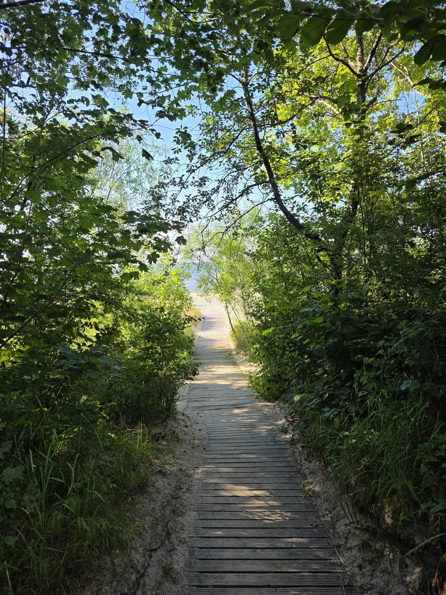

Product design — 2026
Rebuilding a banking app's onboarding
A case study on cutting drop-off in half by rethinking identity verification as a conversation, not a form.
Design · Photography · Writing
Based in Bulgaria. I design digital products and chase light with a camera — this is where both live.

01 — Design
Interfaces, systems, and the occasional poster. I care most about the seams — where a flow hands you off, where a grid bends.
02 — Photography
I photograph to notice things. The gallery is the overflow — no theme, just what the light was doing.
03 — Writing
Process, small decisions, and what I'm learning as I go. Written for myself first, published in case it helps.
Product design — 2026
A case study on cutting drop-off in half by rethinking identity verification as a conversation, not a form.
Brand & identity — 2025
Type, packaging, and signage rooted in the texture of the region's paper mills.
Editorial design — 2024
A forty-year-old student publication, rebuilt on a stricter grid and a type system its writing deserved.
Film, walks, and the occasional print — no theme required.
About
DP2 student exploring design, photography, and the space between them. This site is where I document the work, experiments, and thinking along the way.
Get in touch →